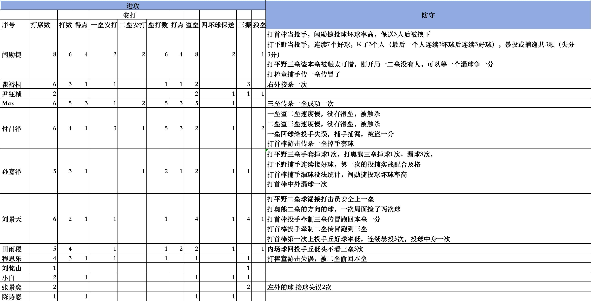

比赛数据表

三AI共识总结
- 进攻端：闫勋捷、Max、付昌泽是球队进攻核心，打击效率高，盗垒侵略性强
- 防守端：投手控球不稳（暴投、保送过多），捕手漏球问题突出，内野传球失误多
- 改进方向：优先加强投捕基本功、滑垒技术、场上专注力训练
📊 整体数据概览
参与球员：13名球员（闫勋捷、瞿裕桐、尹钰桢、Max、付昌泽、孙嘉泽、刘景天、田雨稷、程思乐、刘梵山、小白、张景奕、陈诗恩）
🏏 进攻数据分析
核心打击数据排名
| 排名 | 球员 | 打席数 | 打数 | 安打数 | 打击率 | 得点 | 打点 | 盗垒 |
|---|---|---|---|---|---|---|---|---|
| 1 | 闫勋捷 | 8 | 6 | 4 | .667 | 4 | 4 | 8 |
| 2 | Max | 6 | 5 | 3 | .600 | 3 | 3 | 5 |
| 3 | 付昌泽 | 6 | 4 | 4 | 1.000 | 1 | 3 | 2 |
| 4 | 田雨稷 | 5 | 4 | 1 | .250 | - | 1 | 2 |
| 5 | 瞿裕桐 | 6 | 3 | 1 | .333 | 1 | 1 | 2 |
- 闫勋捷：全队MVP表现，8次盗垒（全队最高），2支二垒安打，得点打点数均为4
- Max：2支二垒安打，贡献5分打点，进攻效率高
- 付昌泽：4支安打全部为有效安打（3支一垒+1支二垒），但得点能力待提升
- 孙嘉泽：虽只有2支安打，但包含1支二垒安打
🧤 防守数据分析
投手表现
| 球员 | 局数 | 关键数据 | 问题 |
|---|---|---|---|
| 闫勋捷 | 首棒+平野 | 7个好球，K掉3人 | 坏球率高，保送3人后换下，暴投/捕逸3颗失3分 |
| 刘景天 | 首棒 | - | 好球率低，连续暴投3次，投球中身1次，牵制传垒失误2次 |
投手总结：控球不稳是主要问题，暴投、保送过多导致失分
捕手表现（孙嘉泽）
- ✅ 连续接好球，首次投捕配合及格
- ❌ 漏球严重：打平野漏球无法统计，打首棒中外漏球1次
- ❌ 手套掉球1次（三垒），打奥熊时掉球1次、漏球3次
- ❌ 传一垒传冒1次
评价：接球基本功需加强，漏球问题突出
内野防守
| 球员 | 位置 | 表现 |
|---|---|---|
| 付昌泽 | 游击 | 传杀一垒掉手套球1次，回传投手失误导致盗一分 |
| 程思乐 | 游击 | 失误被二垒偷回本垒 |
| 田雨稷 | 内场 | 回投手丘低头不看三垒3次（注意力问题） |
内野问题：传球失误多，专注力不足
外野防守
| 球员 | 位置 | 表现 |
|---|---|---|
| 瞿裕桐 | 右外 | 接杀1次 ✅ |
| 张景奕 | 左外 | 接球失误2次 ❌ |
| 孙嘉泽 | 中外 | 漏球1次 ❌ |
跑垒/牵制问题
- 付昌泽：一垒盗二垒、二垒盗三垒均因速度慢+无滑垒被触杀（2次）
- 闫勋捷：三垒盗本垒被触杀（建议：开局一二垒无人时可等漏球争分）
- 刘景天：投手牵制三垒传冒跑回本垒1分，牵制二垒传冒跑到三垒
📈 综合评价与建议
- 闫勋捷 - 进攻核心，但投球控球需改进
- Max - 攻守均衡，三垒传杀一垒成功
⚠️ 需要重点改进
| 问题类别 | 具体表现 | 建议 |
|---|---|---|
| 投手控球 | 暴投、保送、中身球过多 | 加强控球训练，建立好球带信心 |
| 捕手接球 | 孙嘉泽漏球、掉球频繁 | 专项接球训练，手套基本功 |
| 盗垒技巧 | 付昌泽2次被触杀，无滑垒 | 学习滑垒技术，判断起跑时机 |
| 传球准确性 | 内野传一垒多次失误 | 传接球基本功，压力下的稳定性 |
| 专注力 | 田雨稷不看垒包 | 培养场上观察习惯 |
💡 战术建议
- 闫勋捷：适合担任中心打者，但投球建议作为后援而非先发
- 付昌泽：打击手感好但跑垒激进，需加强跑垒判断
- 孙嘉泽：捕手位置潜力有，但必须解决漏球问题才能胜任
- 刘景天：投球动作需调整，目前不适合高压局面投球
这是一份非常详细的棒球/垒球比赛球员数据统计表，不仅记录了标准的进攻数据，还包含了非常具体的防守表现和赛场细节记录。从防守备注中对失误的详细描述、投手的保送率以及大量的盗垒数据来看，这大概率是一支青少年棒球队或业余球队的比赛/训练复盘记录。
一、进攻端表现分析：火力充足，跑垒极具侵略性
总体来看，球队的前段棒次（或主力球员）进攻能力很强，上垒率高，且非常依赖盗垒来推进垒包。
绝对核心（MVP级别表现）：
- 闫勋捷：进攻端的大腿。8次打席、6个打数，贡献了全队最高的4分得分、4分打点以及夸张的8次盗垒。他击出了2支一垒安打和2支二垒安打（总垒打数6），具备出色的击球准度和长打能力，是球队最重要的得分引擎。
- Max：效率极高的打者。6次打席5打数，贡献3分得分和3分打点，击出1支一垒安打和2支二垒安打。他的5次盗垒也证明了他极具破坏力的跑垒速度。
- 付昌泽：出色的"安打机器"。6次打席4个打数，击出了全队最多的3支一垒安打和1支二垒安打，贡献3分打点。他的击球非常稳定，能有效地串联进攻。
跑垒战术：
- 全队盗垒数极高（闫勋捷8次，Max 5次，刘景天4次）。这说明球队战术非常激进，或者对手的捕手阻杀能力、投手看管跑者的能力较弱。
- 跑垒隐患：备注中提到付昌泽"一垒/二垒盗垒速度慢，没有滑垒，被触杀"，以及闫勋捷"盗本垒被触杀太可惜"。这说明虽然盗垒多，但跑垒技巧（尤其是滑垒）和时机判断还有很大的提升空间，送出了不必要的出局数。
二、防守端表现分析：暴露出较多基本功和意识问题
相比于亮眼的进攻，防守端的记录充满了教练/记录员的"无奈"，主要集中在基本功失误和赛场经验不足上。
投手群表现：控制力是最大痛点
- 闫勋捷：表现两极分化。开局投球"坏球率高，保送3人后被换下"；但后续上场时展现了统治力，"连续7个好球，K了3个人"。需要提高投球稳定性和心态。
- 刘景天：作为投手失误较多。"牵制三垒传冒"、"牵制二垒传冒"直接导致丢分和跑者进垒，且"好球率低，连续暴投3次，投球中身一次"。牵制技术和控球需要重点加练。
守备与传球基本功：
- 接球失误频发：孙嘉泽在三垒"掉球1次、漏球3次"，刘景天在二垒"漏接、面脸了两次球"，张景奕在左外野"接球失误2次"。内野手对地滚球的处理和外野手判断落点还不够扎实。
- 传球精度：存在"捕手传一垒传冒了"、"游击传杀一垒掉手套"等情况，传球的准度和接球者的配合需要加强。
- 捕手防守：提到"捕手漏接没法统计"、"暴投或捕逸共3颗"。捕手在挡球（Blocking）这项技术上还需要多下功夫，这直接关系到垒上有人时会不会白白送分。
赛场意识（棒球智商）：
- 田雨稷"内场球回投手丘低头不看三垒3次"，这是一个典型的经验不足的表现。拿到球后没有观察场上局势（尤其是最危险的三垒跑者），只顾着回传投手。
三、总结与训练建议
这支球队"攻强守弱"的特点非常明显。进攻端有闫勋捷、Max、付昌泽这样能打能跑的尖子球员，足以给对手造成巨大压力。但防守端的非受迫性失误（Errors）过多。
- 投捕基本功：投手的控球训练（减少保送和暴投）以及牵制动作的规范；捕手的挡球和接球训练，减少捕逸。
- 内野守备与传球：强化内野手接地滚球的基本动作，以及接球后传向一垒的稳定性和准度。
- 情景模拟训练（Cut-off & 赛场意识）：训练球员拿到球后"先看哪里再传哪里"，比如内野手拿到球要习惯性看一眼前位跑者（如三垒）。
- 滑垒专项训练：鉴于球队极度依赖盗垒，必须教会球员正确的滑垒姿势，这不仅能提高盗垒成功率，更能保护球员避免受伤。
可以，这张表我按比赛复盘表来给你拆。
一、进攻端：很有杀伤力
从表里最明显的特点有两个：
1）前几棒输出很强
核心几个人的数据非常亮眼：
- 闫勋捷：8打席、6打数、4得点、2一垒安打、2二垒安打、4打点、8盗垒、2保送 —— 这一行基本就是进攻发动机+终结点。既能上垒，也能推进，还能靠盗垒持续施压。
- Max：6打席、5打数、3得点、1一垒安打、2二垒安打、3打点、5盗垒 —— 长打价值很高，是第二个强点。
- 付昌泽：6打席、4打数、1得点、3一垒安打、1二垒安打、3打点、1保送 —— 这属于非常高效的中轴输出，纯看击球质量也很好。
这三个人基本把进攻主干撑起来了。
2）盗垒侵略性非常强
表里盗垒数很夸张，说明你们不是等安打串联，而是上垒后立刻给对面持续压力。这类打法在青少棒很有效，因为对方一旦投捕或内场处理球不稳，就会连续掉分。
二、进攻端的问题：aggressive 是对的，但有些分可以更聪明地拿
表右侧也写得很清楚，有几种"可惜球"：
- 盗本垒时机偏急：比如"三垒盗本垒被触杀太可惜，一二垒没人，可以等漏球拿分"。这个判断很对。青少棒拿分很多时候不是硬抢，而是等投捕失误自然送分。
- 跑垒细节不够：付昌泽那两条很典型："一垒盗二垒速度慢、没滑垒，被触杀"、"二垒盗三垒速度慢、没滑垒，被触杀"。说明不是不能跑，是起跑、节奏、滑垒动作没做完整。
- 部分打者三振偏多：比如瞿裕桐3K、刘景天4K。这会让前面辛苦制造的机会断掉。你们这队整体很适合"打出去+跑起来"，所以两好球后的缩棒、碰球、自保能力很关键。
三、防守端：丢分主要不是被打爆，而是自己送机会
右边防守复盘最核心的问题，不是"对面特别会打"，而是这些：
1）投手坏球率高 / 暴投捕逸多
这是最大丢分源。表里提到：
- 闫勋捷投球时坏球率高，保送3人后被换下
- 另一位投手一度连续7个好球、K了3人，但同时有暴投或捕逸3颗，失3分
- 刘景天第一次上丘时也有好球率低、连续暴投3次、投球中身一次
这说明问题不是没人能投，而是稳定性差。一旦进入青少棒比赛节奏，四坏+暴投+捕逸比被打安打更伤。
2）接球与传球失误偏多
表里能看到的失误点不少：
- 捕手传一垒传冒
- 三垒掉球、漏球
- 二垒漏接
- 游击失误
- 左外接球失误2次
- 中外漏球1次
- 右外有一次接杀，算亮点
这说明不是某一个位置单独崩，而是全队"第一下接稳、第二下传准"都还不稳定。
3）对跑者和局面的观察不够
这类失分很伤：
- "内场球回投手丘低头不看三垒3次"
- 牵制二垒时传冒，结果跑者继续推进甚至回本垒
- 有球打到二垒处理慢，打者安全上垒
这类不是技术绝对做不到，而是抬头、先看跑者、先想出局数和下一垒包的比赛意识问题。
四、个人点评
按这张表里能看清的内容，我会这么看：
进攻最佳
- 闫勋捷：全场最有存在感，既有安打、长打、打点，也有超强盗垒威胁。
- Max：长打价值突出，二垒安打很关键。
- 付昌泽：纯进攻效率非常高，但跑垒细节还能再抠。
防守亮点
- 瞿裕桐：右外接杀一次，这种球很提气。
- Max：三垒传一垒成功一次，说明有处理球能力。
- 孙嘉泽：捕手"连续接好球"，第一次投捕配合"及格"，这其实是好信号。
需要重点提升的点
- 投手组：先把"进好球带、减少四坏和暴投"放在第一位。
- 捕手/内场：接稳再传，不要急着做高难度。
- 跑垒组：盗垒要配套滑垒；三垒有人时先学会"看漏球、看传球、看防守站位"。
- 高三振打者：两好球后的保命能力要练。
五、如果我是教练，我下次训练只抓这 4 件事
- 投手：先练 60% 以上好球率 —— 不用追求多快，先能连续进好球。
- 捕手+投手：专项练挡球、接球后找球 —— 把暴投/捕逸失分压下来，比赛内容会立刻好很多。
- 内场：接球—抬头—传球 的固定流程 —— 尤其二垒、三垒、游击，先别乱忙。
- 跑垒：滑垒和盗本垒时机
- 盗二盗三必须带滑垒
- 三垒跑者优先等漏球、传球失误、内场注意力不集中